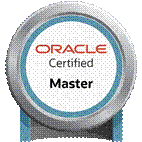

Selvam Ramasamy
selvamselvam@hotmail.com I-608, Ittina Mahaveer Apartment, Neeladri Road, Electronic City Phase I, Bangalore-100, India +91-9986007260 | Linkedin | GitHub
Experience Summary
✩ 16 years of experience in product development using Cloud, Big Data and Distributed computing.
✩ Oracle Certified Enterprise Architect, Certified Cloud Architect (GCP, AWS and Azure) and Big Data technologies
✩ Manage the software development cycle, including architecture, development, choose appropriate tools, disaster recovery, high availability, cloud native applications using 12 Factor App Principal
✩ Published technical papers in IEEE, MSDN and got the awards from Microsoft (Community Contributor and Most Valuable Professional)
✩ Got performance awards from Oracle, HP and OpenText
Technical Skills
Languages : Java and Python
Big Data : Kafka, Streams, Spark, Airflow, Cassandra, HBase and Zookeeper
Cloud and Cloud-Native: GCP, Amazon AWS, Azure, Kubenet, Docker, Oracle Private Cloud
Enterprise Application : JAX-WS/REST, Spring Boot, Hibernate/JPA, EJB/JCA, JMS, WCF,
Hazel cast, Avro, Protobuf, RabbitMQ, New Relic
Relational Database : MySQL, MS-SQL, and Oracle
Architect and Design : Cloud Native, Chaos, Microservice, UML and Design Pattern
CI/CD : GIT, Jenkins, Gradle, Maven and XUnit framework
User Interface : JavaScript, jQuery, JSON, HTML, XML and CSS
Secondary Skills : Hadoop/MapReduce, MongoDB, C#/C++, Windows API, MFC
Certifications and Awards
✩ Big Data and Machine Learning
o Microsoft Certified: Azure Data Scientist Associate 2021
o AWS Certified Machine Learning – Specialty 2021
o Google Professional Data Engineer 2021
o Confluent Certified Developer for Apache Kafka 2020
o Datastax Apache Cassandra 3.x Developer Associate Certification 2020
✩ Cloud
o Google Professional Cloud Architect 2021
o Microsoft Certified: Azure Solutions Architect Expert 2020
o AWS Certified Solutions Architect - Associate 2020
✩ Oracle Certified Master, Java EE 6 Enterprise Architect (OCMEA) 2018
✩ Sun Certified Programmer for the Java Platform (SCJP), Standard Edition 5.0 2009
✩ Microsoft Technologies
o Certified Specialist Windows Communication Foundation (WCF) 2012
o Microsoft Community Contributor (MCC) for VC++ 2011
o Microsoft Community Star 2004 and Most Valuable Professional (MVP) in VC++ 2006
Experience
|
Lead Software Architect |
OpenText |
May 2018 – Till Date |
Project : Integrate Trading Grid Messaging Service with LENS Visibility tool Jan 2019 – Till date
Environment : Java, Spring Boot, Jenkins, Kafka, Stream, Oracle, Kubenet, Docker, Cloud Native
Roles and Responsibilities:
✩ Design and architect components of OpenText visibility product which supports 200 million transactions per day using Microservices and distributed computing
✩ Involved Analysis integration points, Proof of concept, code, design and code review, refactoring the code, Disaster Recovery and multi region deployment
✩ Successfully replace Active Documents with newly acquired liaison LENS Visibility Tool for tracking OpenText Trading Grid Messaging Service (TGMS) transactions
Project : Trading Grid Messaging Service May 2018 to Dec-Till date
Environment : Java, Spring Boot, Tomcat, REST, Web Service, ActiveMQ, Cassandra, Eclipse
Roles and Responsibilities:
✩ Involved Analysis, design, estimation of the Trading Grid Messaging Service components including Trading Grid Event Service (TGES), Active Documents (AD) and Inovisworks Products.
✩ Create Proof of Concepts (POC) with modernization technologies including Kafka, Cassandra, HBase and replacing from EJB to REST based services successfully.
✩ Involved coding, Core and design review of the TGMS product components.
|
Principal Member Technical Staff |
Oracle India Pvt Ltd |
May 2014 – May 2018 |
Project : Oracle Cloud at Customer May 2017 to May-2018
Environment : Java, Python, JPA, Docker, Cloud Machine, Eclipse
Roles and Responsibilities:
✩ Involved Analysis, design, coding the Oracle lifecycle service for managing the private cloud applications using REST API.
✩ Design and implement Common Orchestration Services (COS) services for installing and managing the lifecycle service which reduces the initial setup and patch management for Oracle Private cloud
✩ Automate the testing efforts which reduces the manual tasks around 7 days to 1 day using Jenkins’s pipeline in every release.
Product : Oracle Product Development Lifecycle– May 2014 to May 2017
Environment : Java, C#, Web services, J2EE, JMS, Weblogic, XML, Oracle, IIS and ANT
Roles and Responsibilities:
✩ Successfully delivered Reporting Management System (RMS), Fusion Strings Repository (SR) and Product Lifecycle Suite (PLS) product development and maintenance.
✩ Successfully completed Audit Framework for tracking all the application usage
✩ Involved product requirement analysis, Development and deliver the components in Oracle Product Development Lifecycle product.
✩ Increased Scalability and Reduced Downtime, Increased Performance of Reporting Management System (RMS) back-end services implementing the load balancer and horizonal scaling
|
Technical Lead |
HP Global soft |
August 2010– May 2014 |
Project : Healthways Business Layer using web service from May 2011 to May 2014
Environment : Java, Webservice, C#, WCF, JBOSS, Eclipse, Visual Studio 2005/2010
Roles and Responsibilities:
✩ Successfully delivered Analysis, Architect and design documents and developed coding for Java web services with customer appreciation.
✩ Involved code/design review and refactoring the code for improving the performance.
✩ Estimate project cost, Analysis the source code and Create Design document and Proof of Concept (POC) for support Multilanguage User interface.
Project : Health Care Information System (HCIS) - August 2010 to May 2011
Environment : Java, J2EE, EJB, SQL and Eclipse
Team size : 11
Roles and Responsibilities:
Managing the development team and involved project Management activities.
✩ Successfully involved all software development lifecycle, communicate with customer for collecting the requirements.
|
Sr Member Technical Staff |
Oracle India Pvt Ltd |
December 2004 – Aug 2010 |
Project : Siebel EAI Weblogic Integration – Dec 2008 to August 2010
Environment : C++, Win32/MFC, EJB 3.0, JMS, JCA, Weblogic, XML and ANT
Roles and Responsibilities:
✩ Successfully involved product requirement analysis, Proof of concept and deliver the design documents in Siebel Enterprise Application Integration (Siebel EAI) product.
✩ Involved Coding, Unit test and code review for inbound, outbound communication with other platforms and delivered the product successfully.
Project : Siebel Product Installers and Configuration – Oct 2006 to Dec 2008
Environment : C++, XML, Core Java and ANT
Roles and Responsibilities:
✩ Involved for analysis and design the Siebel Product Installers and Configuration modules.
✩ Design and Develop Siebel installers and configuration framework using Oracle Universal Installer (OUI) product that reduce the major Install shield license cost.
✩ Design and develop Pre-requirement check framework for Windows and Linux platforms.
Project : Oracle Universal Installer (OUI) - December 2004 to October 2006
Environment : C++/Win32 SDK, XML, Java and ANT
Roles and Responsibilities:
✩ Successfully port the C/Java based Oracle Universal Installer products from X86 to X64/IA64 in Windows and Unix/Linux platforms
✩ Involved many Oracle releases from 10.X to 11.X.
✩ Automate build process for Oracle products using UIP (Unified Integration Process)
Education
✩ Master of Computer Applications, 74% Bharathiyar University, Coimbatore, Tamilnadu, 2003
✩ Bachelor of Science (Mathematics) 74% Vivekanada College, Madurai, Tamilnadu, 2000
Selected Publications
✩ “Webservice based Vulnerability testing framework”, R.Selvam, Dr. A. Senthilkumar, International Conference on Green Computing Communication and Electrical Engineering (ICGCCEE),2014
✩ “Cryptography based secure multipath routing protocols in Wireless Sensor Network: A Survey”, R.Selvam, Dr. A. Senthilkumar, International Conference on Electronics and Communication Systems(ICECS), IEEE, 2014
✩ “Secure Introductions: Low-cost public keys for all mobile devices”, Kapali Viswanathan, Selvam Ramasamy, Ravishankar KH, Tech Con ’14, 2014
✩ “Cloud Based Security Framework”, Selvam Ramasamy and Mohan Kumar Noothalapati, Tech Con ‘13, Global Technology Programs for HP employees, 2013
✩ “Enterprise Integration Logging”, Selvam Ramasamy, Mohan Kumar, Tech Con ‘13, 2013
✩ Secure Function Pointer and Callbacks in Windows Programming (Security), Codeproject web
✩ Secure String Handling in Windows Applications (Security), Codeproject web